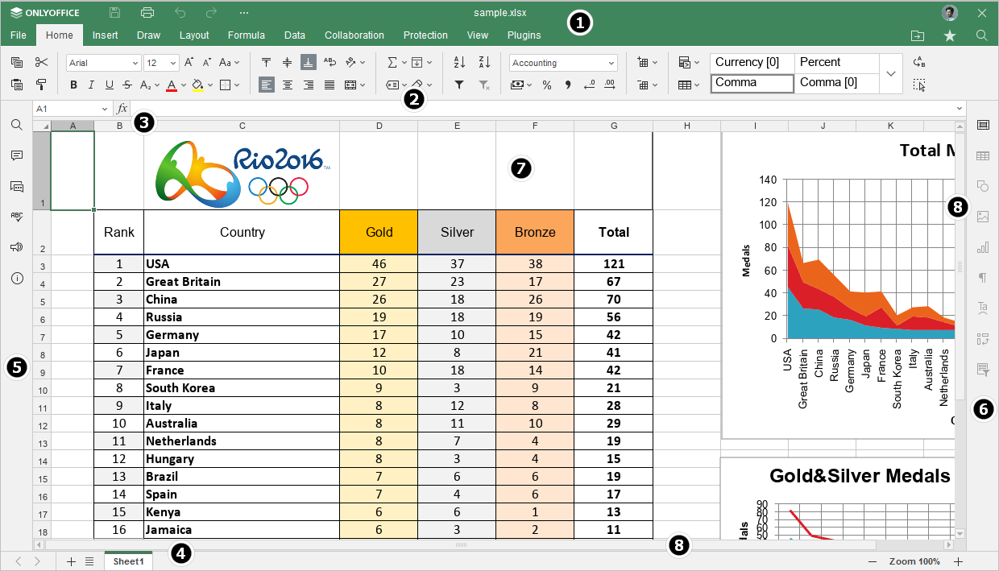
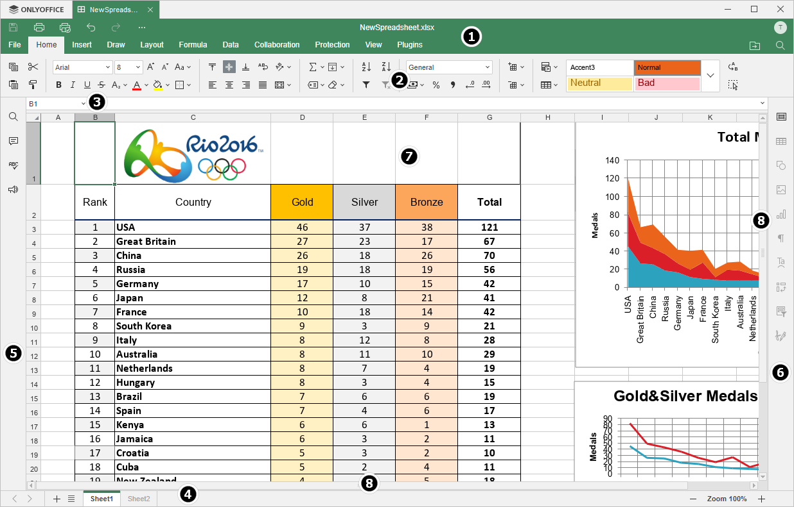

Uvod u korisnički interfejs Spreadsheet Editor-a
Spreadsheet Editor koristi interfejs sa karticama gde su komande za uređivanje grupisane po funkcionalnosti.
Glavni prozor Online Spreadsheet Editor-a:

Glavni prozor Desktop Spreadsheet Editor-a:

Interfejs editora sastoji se od sledećih glavnih elemenata:
-
Zaglavlje editora prikazuje logo, kartice za sve otvorene tabele, sa njihovim nazivima i kartice menija.
Na levoj strani zaglavlja editora nalaze se dugmad Save, Print file, Undo i Redo. Kliknite na ikonu sa tri tačke desno da biste prilagodili koja dugmad će biti sakrivena, ako je potrebno.
Na desnoj strani zaglavlja editora, pored korisničkog imena, prikazane su sledeće ikone:
- Otvori lokaciju fajla - u desktop verziji omogućava otvaranje fascikle u kojoj je fajl sačuvan u prozoru File explorer. U online verziji omogućava otvaranje fascikle u modulu Documents gde je fajl sačuvan, u novoj kartici pregledača.
- Share - (dostupno samo u online verziji) omogućava podešavanje prava pristupa dokumentima sačuvanim u oblaku.
- Označi kao omiljeno - kliknite na zvezdicu da biste dodali fajl u omiljene radi lakšeg pronalaženja. Dodati fajl je samo prečica, dok sam fajl ostaje na originalnoj lokaciji. Brisanjem fajla iz omiljenih ne uklanja se fajl sa originalne lokacije.
- Pretraga - omogućava pretragu tabele po određenoj reči, simbolu itd.
- Gornja traka sa alatkama prikazuje skup komandi za uređivanje u zavisnosti od izabrane kartice menija. Trenutno su dostupne sledeće kartice: File, Home, Insert, Draw, Layout, Formula, Data, Pivot Table, Collaboration, Protection, View, Plugins.
Opcije Copy, Paste, Cut i Copy style uvek su dostupne na levoj strani gornje trake sa alatkama bez obzira na izabranu karticu. Dugme Select All nalazi se na levoj strani gornje trake sa alatkama kartice Home.
- Traka formule omogućava unos i uređivanje formula ili vrednosti u ćelijama. Traka formule prikazuje sadržaj trenutno izabrane ćelije.
- Statusna traka na dnu prozora editora sadrži neke alatke za navigaciju: dugmad za navigaciju između listova, dugme za dodavanje radnog lista, dugme za listu listova, kartice listova i dugmad za zumiranje. Statusna traka takođe prikazuje status čuvanja u pozadini i status veze kada nema konekcije i editor pokušava ponovo da se poveže, broj filtriranih zapisa ako primenite filter, ili rezultate automatskih izračunavanja ako izaberete više ćelija koje sadrže podatke.
-
Levi bočni panel sadrži sledeće ikone:
- - omogućava korišćenje alata Search and Replace,
- - omogućava otvaranje panela Comments,
- - (dostupno samo u online verziji) omogućava otvaranje panela Chat,
- - omogućava proveru pravopisa teksta na određenom jeziku i ispravljanje grešaka tokom uređivanja.
- - omogućava kontaktiranje našeg tima za podršku,
- - (dostupno samo u online verziji) omogućava prikaz informacija o programu.
- Desni bočni panel omogućava podešavanje dodatnih parametara različitih objekata. Kada izaberete određeni objekat u radnom listu, odgovarajuća ikona se aktivira na desnom panelu. Kliknite na ovu ikonu da biste proširili desni panel.
- Radna površina omogućava prikaz sadržaja tabele, kao i unos i uređivanje podataka.
- Horizontalne i vertikalne klizače za pomeranje omogućavaju pomeranje gore/dole i levo/desno.
Radi vaše praktičnosti, možete sakriti neke komponente i ponovo ih prikazati po potrebi. Da biste saznali više o podešavanju prikaza, pogledajte ovu stranicu.
Kada ima mnogo ikona na levom i desnom panelu, donje ikone će biti sakrivene i mogu se otvoriti pomoću dugmeta More.